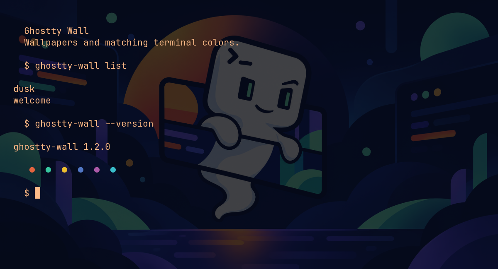
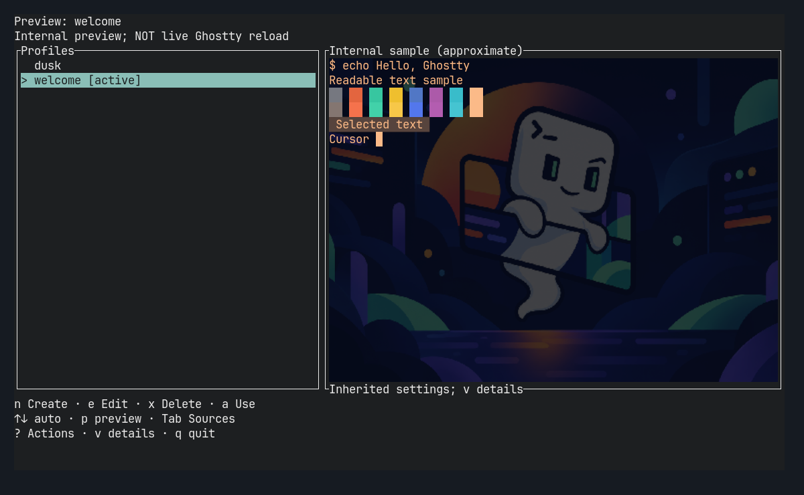

Get started
A wallpaper.
Your colors.
Set a Ghostty wallpaper, generate matching terminal colors, and save looks you can switch between.
Linux x86_64 stablemacOS experimentalMIT licensed


Try the bundled wallpaper
Terminal
ghostty-wall init
ghostty-wall apply welcome
ghostty-wall createAfter installing, try Welcome, then generate a wallpaper or choose your PNG/JPEG. Save and choose Use now to apply it. If Ghostty does not change, reload its configuration manually.
Browse your saved looks
Run ghostty-wall, select a profile to preview it, then choose Use to apply it. Browser and editor samples are internal previews, not live Ghostty reload.

